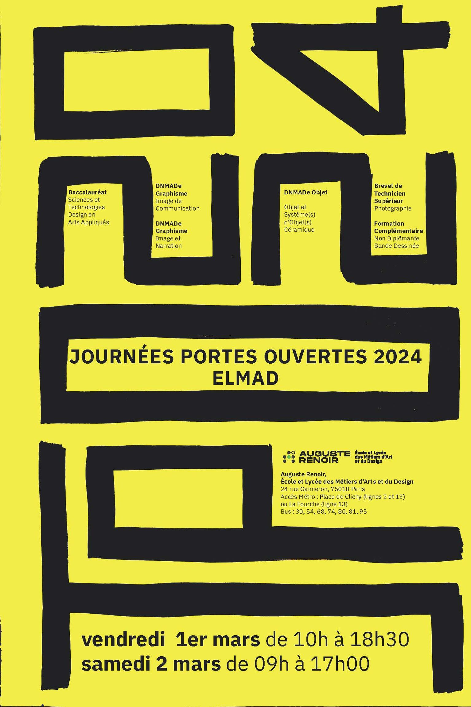

AFFICHE PORTES OUVERTES
Conception de l’affiche des journées Portes Ouvertes du lycée des Arts et Métiers Auguste Renoir.
Le concept était de mettre en avant le titre « JPO 2024».
Pour ce faire, j’ai choisi d’orienter le titre de manière verticale en utilisant un marker pour rappeler les spécificités de l’école.